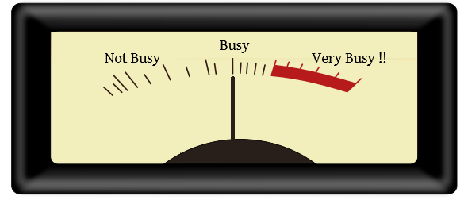

A much longer post than my normal ones and, as the title suggests, it wont mince words. This is not about creating a business or growing a business, it is about not screwing up your current business when it is working well. Some notes from the edge..
Managing the Buffer

All systems work most efficiently when they are processing an optimal throughput. Whether that be an engine, a factory production line, an electronic system, or a worker; Buffering peak-loads and releasing work at a proscribed sustainable rate is the most proven way to operate at maximum efficiently.
Humans are not as good as engineered systems at doing this though, we have bad-days, holidays, sick days, downtime and really should not be pushed over 70% for too long, too often. I would class 70% as a good place to be, occupied, not stressed, and time for coffees and chats with colleagues without feeling any pressure. But some days we can and do get pushed to 100% just like on slow days we might only be working at 20%.
I am a good example of this; If I ever get 100% busy, and more work comes in, I am usually fine as it just goes in my inbox (to-do pile) and I work through the problems logically in order of urgency until I reach a non-urgent problem, then I go for a cup of tea or a walk. This system only falls apart if a more important job comes in that needs to be done before the current job is finished.
The fact is that (for me at least) it is hard to switch your brain and change your focus mid-job from one thing to another without increasing the chances of error. I remember a particular incident during the 2015 vintage (a notoriously hectic time) where I had this happen, and upon switching back to my original task I executed a half-finished query setting the volume of every single vessel in the winery to 1200 Litres, and forcing the production to stop at its busiest time while I fixed the problem I created.
The lesson you should take away from this is that working at 100% does happen occasionally, but that is also the time serious mistakes can happen, you should never design for this load, and getting it too often should be a red-flag.

But while it is perfectly acceptable for people to hit this 100% barrier occasionally to take up slack, not all workers and managers see it like that, and despite the fact that most of the time they not busy, some people hitting this barrier even once will flag to everyone who will listen that they are now overworked.
Good Manager / Bad Manager
People seeing those few times that I frantically type away at a computer, trying to resolve some problem or other, probably assume my whole workload is like that. It is not. I can type just as frantically when I am not busy, replying to an email, updating some none-crucial code, writing some non-important query, or even writing a blog like this. Do not assume!
A good manager would know not to assume, and hopefully have systems in place to buffer the work against the available staff, sometimes this results in having balance leave requests, slow down the work coming in, or planning for more staff if the increase is going to push the current staff to be overworked. A good manager will always keep an eye on the input to this buffer to see how much it is filling up and how quickly it is emptying. In most cases they should know how long a job takes and how long it should take a competent person, versus a new trainee to do it (harder to know for some work like fault repair but at least a maximum time can be allocated after which the work becomes unprofitable).
A good manager should also know when a department is crying-wolf to request additional resources without a known future demand. There is a good analogy in data communications, if you had to size every buffer or array to account for the maximum data size they may possibly receive you may need to create buffers of 100’s of megabytes. However if you add flow-control then the buffer can be magnitudes smaller and much better optimised. People aren’t communication systems, but the input to the buffer can and must be managed by proper scheduling.
A good manager should also always question what work is coming into this buffer, what are their staff doing, and more importantly, why they are doing it. If Billy-Bob has done the same task for 3 years, demand has not changed, and his buffer is now getting constantly filled. What has changed?
And yes, at times a good manager should also be prepared to chip-in to help ease the workload of their staff.
Don’t Employ More. Employ Better!

These five words should be chiselled in stone on the walls of every good managers office. We have all seen them, people who are just excellent at what they do, they’re the go to person for instant answers, always on top of the problem or task at hand, their workmanship is excellent and nothing is ever a problem. Most people can get to be this person with the correct training, aptitude, attitude and time.
Yet we all know there are others, the ones you cannot talk about, those people who are the opposite, shirkers, gaming the system to maximize it for them at the expense of the company and their colleagues. As a good manager you must be aware that the real costs of employing this latter type of person will be very costly, much more than just the salary you pay them and the lower productivity they give. If you only get one thing right as a manager it is to not fuck-up and hire this type of person!
The Interview phase is only part of the great filter to achieve this, however beware that some people have interviewing to an art. During my interview for IT Manager at Leominster District Council in 1996, the interviewers were the Chief Accountant, the Treasurer and a councillor who ran the local butchers. They were NOT the right people to interview me. If they had done a technical pre-interview with my peers and checked my references then yes, this may have been OK, but they did not, and I was offered the job thirty minutes into the interview.
When this contract ended, a similar interview for IT Manager at REHAU went exactly the same way; I did not even meet the most important non-technical requirements of their job description (must speak German!), actually a stupid pre-requisite which did nothing but eliminate dozens of other suitable candidates. The rest of the technical requirements I spent twenty minutes before hand ensuring I knew the basics. What they did not understand was that an IT Manager job is not about knowing a specific technology, it is about knowing how technology works and how people use it.
Luckily for these two organisations they got me 🙂 but never assume the ones doing the hiring know what they are doing, ensure you apply your own filters on-top of these and always check references and qualifications. Remember once an incompetent person is in charge of hiring, the door is now open for them to hire more incompetent people.
There are a few red-flags when hiring but these can also be red-herrings too. Many people big-up their resumes but some don’t. Real-world verifiable results should trump all other factors; People will overestimate their involvements in successful systems and obviously never tell you their involvement in failures. Take the time to find out from other sources, because if any fact on the resume cannot be verified all you have is their word for it, and this should influence how in-depth any technical interview should be. This works both ways, a resume may look boring, but if the job does not demand amazing written skills then this should not exclude the person and the same diligence should be given as above.
Red flags in resumes to me are also those who change jobs every few years, I am not talking about genuine reasons for leaving jobs such as contracting, staff lay-offs, moving countries etc I am talking about why someone was not committed to their previous company as it is just as likely that lack of commitment will extend to the new position as soon as a better offer comes along.
Of course the smartest person in the world may not be the easiest to get on with, they may have ruffled some feathers in previous companies and that is why they are leaving. Take the time to find out, it may not be them that is the problem (the interview should tell you this), and lots of people leave good companies due to bad management and said bad managers will not be an honest source of truth.
It is a minefield but due diligence here is the best policy.
Train From Within
What is not talked about much and should be is that with AI these days most office jobs can be done, even to expert level, by a person who is smart, can ask the right questions and follow instructions. Use this to your companies advantage!
If you have a tricky position to fill, none of the applicants are right, none want to relocate, or none like the salary, then most companies first reaction is to hire the next best candidate, or increase the salary to get someone else. This may not be the best solution.
Young people are flexible, eager to please and may not want to go to university nor go on to the debt gravy-train.

If the job can be done by someone with enthusiasm and training then consider giving them a chance. Of the five school leavers I hired into IT positions with no experience whatsoever, all became successful in their job and later career. Most jobs are about aptitude and attitude, if you can find a school leaver or internal candidate that displays both then they should be near or at the top of your list.
The other advantages to the above is loyalty and showing your company is serious about training. If you know your buffer is only going to be filled to 70% then encouraging staff to do on-line training is a no-brainer over the social media alternative.
Remember skill shortages can also be filled in by temporary staff or contractors, and giving internal staff or young people a try you could get you a much more stable and happier workforce. We also used to use temporary staff as a kind of try-before-you-buy.
Separate Pay from value.
Many staff leave due to genuine lack of career progress within a company, they reach the end of their pay scale and now must look externally to break this glass ceiling you have self-imposed on them with your pay scales. Your company not only looses a valuable resource but it now has to recruit and train another, possibly less impressive, replacement.
There is no law that says a manager should be paid more than their staff, and if someone says there is then they are lying. There should be one rule in your company and that is you are paid by the value you give to it. It was a constant frustration as a manager (and an employee) that such outdated rules existed in the big companies I was at, as outside of the company structure it is the norm; a band member is paid more than the band manager, a contractor is normally paid more than the person hiring them and in many progressive companies the people producing the value in the company are paid well in excess of those that manage them.
Walking the Walk
Just because somebody has a BA in business management and/or worked at some top firm does not necessarily make them the one source of truth for how to improve your business. All businesses are different, and a big companies standard operating procedures are unlikely to translate to yours. The mantra for almost every business analysts is, if we get more metrics we can improve the efficiency, but is not always the case. The cost of getting more metrics, plus the cost of analysing the data can many times outweighs any benefits you will get from the “efficiency gain”, and may indeed reduce efficiency while you are doing it, so tread carefully.
Problem and “Toxic” employees
These are the employees nobody wants to talk about; Those already in the company, already gaming the system to their advantage, or maybe the ones who sit at a computer all day with email and a spreadsheet open, yet seem to produce nothing of direct value. This is a very taboo subject and the easiest way to deal with this is never to recruit them in the first place, however they may also come as part of a merger or acquisition and now your company has a problem.
Identifying these employees and addressing the issue direct must be considered a top priority and attitude and performance issues must be handled within the law. For these people you should be looking at their work buffer, how big it is, how long is it taking to fill or empty and most importantly what is in it. They must be given training if necessary, given realistic targets and held accountable if they do not meet them. Written warnings and dismissals are something no manager wants to do but failing to handle problem staff effects everyone and is a big sign of poor management.
We rarely see the above problems in small businesses, and owner operators, neither do we see this often in manual jobs like tradesmen, small builders, small factories where production is scheduled. In these types of businesses, people do not usually have the luxury of either money, or time, and a person not pulling their weight usually stands out like a sore-thumb. No, the problem usually starts one of two ways, either massive (uncontrolled) growth, or poor hiring, and the root cause of both is poor or distracted leadership who now, for whatever reasons, do not know what the people below them are doing.
Remember, once the damage is done, it is extremely difficult to undo, and is usually a magnitude more costly to fix. It damages the business directly through increased overheads, reduced efficiency, and bad publicity when trying to remedy the problem. It can also impact the business less obviously but even more seriously through the damage to other staff members. If your staff either have to pick up the slack of an under-performing worker, have to do unnecessary tasks because of them, or worse are bullied or abused by them.
A good manager should not have to bug the coffee machine to find all this out, a good manager should always have the pulse of what his or her staff are really thinking, most co-workers will tolerate poor staff choices only for so long. Other workers are also unlikely to bring problems directly to management, but if they are affected by it or become disillusioned when they see somebody possibly getting paid the same or more than them and not contributing the same amount are more likely to just leave.
So to finish here are my top indicators that something is not right.
- More Meetings. Meetings should not be regular, they should be for when a group of people need to discuss something together or disseminate important information. Organise paid for drinks or functions if you just want to catch up. See next point.
- Distracted Management. A good manager should know the job of every employee under them, and be visible to everyone, they should not lock themselves in an office nor only talk to their staff during meetings. A good manager lives and breathes the area where his or her staff are. Good managers also should not just talk to the layer below or above them, but every layer in and outside the organisation, from the CEO to the toilet cleaner and anyone outside who interacts with the company.
- Disproportionately more admin staff than the increase in the size of the business. Administrators should always be there to administrate, NOT to pass the burden of administration onto front line workers, NOR to add unnecessary hurdles for them to jump through. Administrators are there to serve the workers NOT the other way around!
- Unnecessary system or procedure changes. Do not allow people to change procedures that work, without excellent reasons that you fully agree with. The implementation of bad systems to replace good systems are a big source of dissatisfaction in companies..
- More administration burden on front-line staff. Goes with the previous two points. You aim should be to ensure that front-line staff have no impediments to doing their job efficiently. Reducing the amount of administration and forms should be the goal of every company.
- Good people leaving. As a manager your top goal should be to retain your top performing staff and that means knowing when they are dissatisfied. Every dissatisfied member of staff will infect the rest of your staff. You cannot outsource this responsibility to HR, nor bring in another manager to fix the problem, if this is your attitude or solution, you have basically failed.
- Lack of promotion from within, or promotion of incompetent people. Indicates failing management at its worst and is a big indicator to staff that it is time to leave.